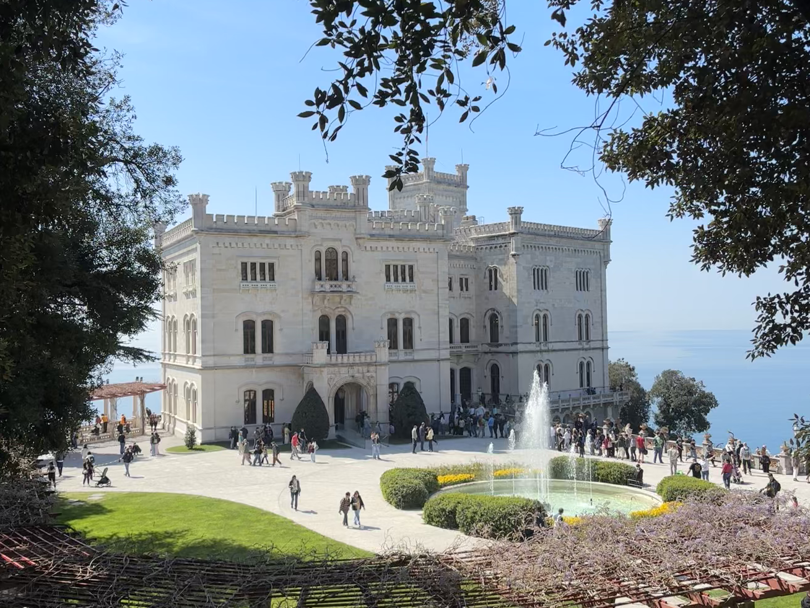
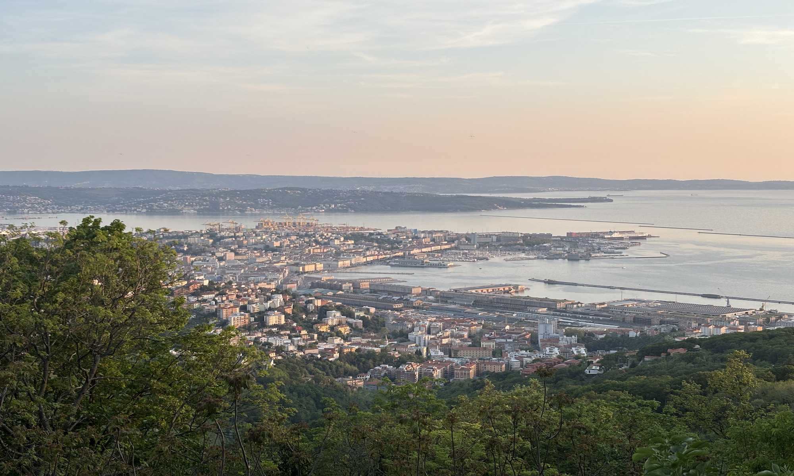
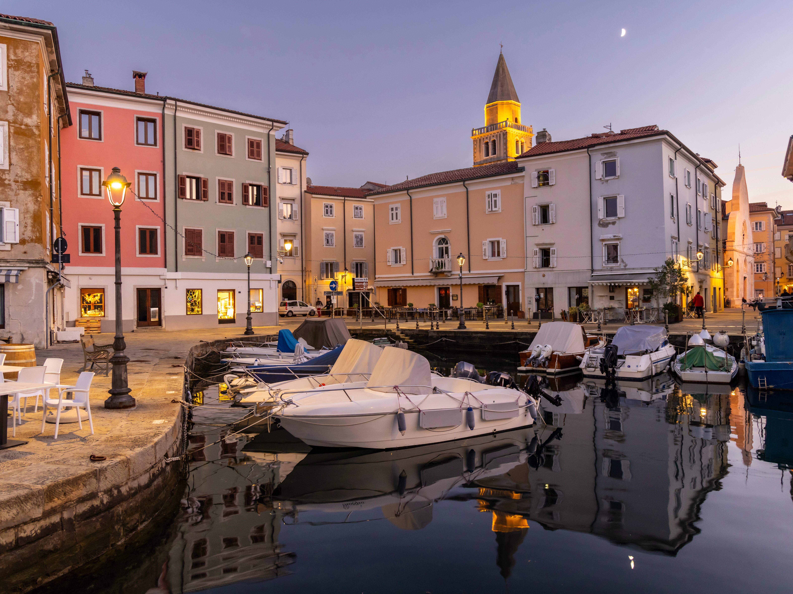
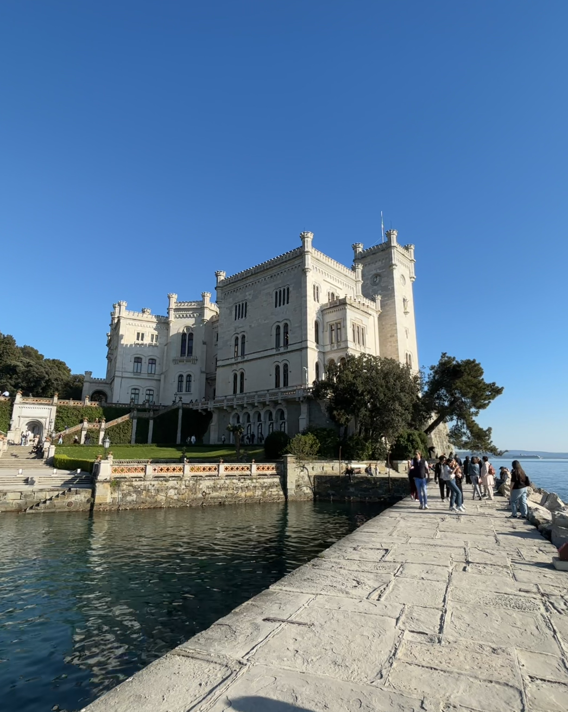
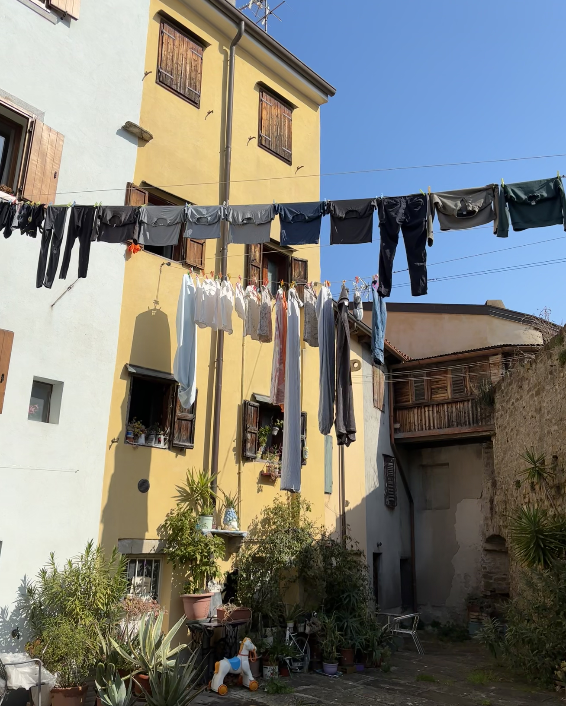

Miramare Castle
the castle on the sea
A white castle on a cliff above the Adriatic, with a green seaside park.
Read more →
One unforgettable day: an intimate small-group minivan tour, 8 guests at most, through a seaside castle, a fishing village and the Karst hills.
Reserve your seatSee the dayTrieste does not shout (the Bora sometimes does). It waits at the end of Italy, where the Karst falls into the Adriatic, and rewards those who slow down: a castle white against the water, a cozy fishing village that cuddles you, hills hovering over the gulf.
We drive you there, gently, in a small group, so you can simply look. Leave the car, the map and the hurry to us.

Trieste is a panoramic jewel. Seen from above, the whole city and the gulf unfold at once: rooftops, ships drifting like slow thoughts, the Adriatic shining in the evening light.
Along the way we stop at various viewpoints, chosen for the light, to watch the gulf from the best seats in town.
Our objective is to have the best panoramas. We meet 7 hours 45 minutes before the sun sets, so the day ends in the best light possible.

A white castle on a cliff above the Adriatic, with a green seaside park.
Read more →
A Venetian-style seaside town across the bay, historic and panoramic.
Read more →
A hill high over the gulf, with a vast view for the sunset.
Read more →


Included: transport, guide, snack, all stops. Not included: lunch and optional tickets.
Yes. We meet 7 hours 45 minutes before sunset, so you watch it from the hill at Grad Socerb, and we are back in Piazza Unità about 30 minutes later. Pick a date on the home page to see the exact time.
Minivan transport, a local guide, a tasting snack and all stops. Lunch and optional tickets (for example the Miramare castle interior) are not included.
Send a request on the contact page or on WhatsApp. You receive a secure payment link, and your seats are confirmed once paid.
Yes, with a full refund up to 48 hours before the tour. If we cancel for weather or safety, you get a refund or a free new date.
Grad Socerb is just across the border in Slovenia. Please bring an ID card or passport.
In Piazza Unità d'Italia, Trieste. We bring you back to the same place.
Only 8 guests per departure, €109 per person. Tell us when you would like to come and we will arrange everything on WhatsApp or email.
Ask about the tour